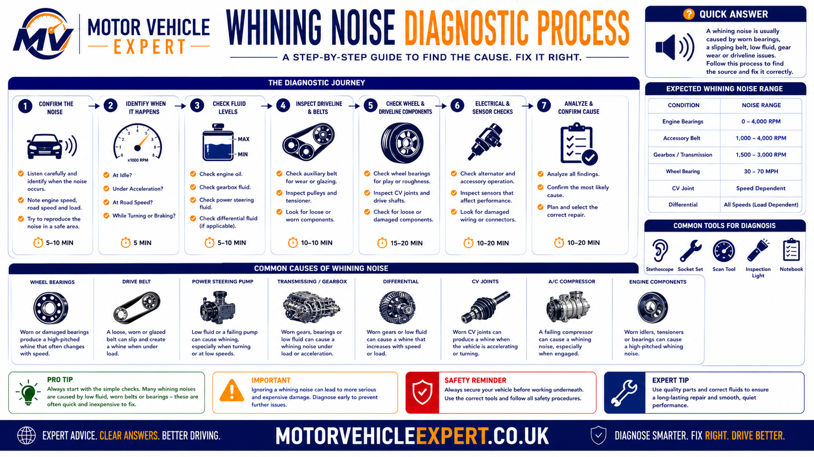

Why does a car make a whining noise when accelerating?
A car usually develops a whining noise because a rotating component is worn, incorrectly loaded, poorly lubricated or running out of alignment. The source may be an auxiliary belt, tensioner, pulley, alternator bearing, turbocharger, power steering system, tyre, wheel bearing, gearbox, differential or another driveline component.
The sound alone rarely identifies the failed part. The most important clue is what controls the noise. A whine that follows engine revolutions points towards a different group of components from a whine that follows vehicle speed. Gear selection, throttle load, steering direction, road surface and coasting behaviour provide further diagnostic evidence.
Whine rises with engine revs
A noise that becomes higher in pitch as the engine is revved may come from an auxiliary belt, tensioner, idler pulley, alternator bearing, hydraulic steering pump, turbocharger or another engine-driven accessory.
Whine rises as the vehicle speeds up
A noise linked mainly to vehicle speed is more likely to involve tyre tread, a wheel bearing, driveshaft support, gearbox output bearing, final drive or differential component.
Whine appears with another fault
Treat the problem more urgently when the sound appears with vibration, heavy steering, difficult gear changes, reduced acceleration, fluid leakage, warning lights, overheating or a burning smell.
Do not order parts from the noise description alone. First identify whether the whine follows engine revs, road speed, gear selection, throttle load or steering direction. That operating pattern can eliminate several incorrect diagnoses before any components are removed.
Diagnose what changes the sound
Whining noises are commonly produced by rotating parts. Bearings, gears, belts, pulleys, tyre tread and turbocharger components all create different frequencies as their rotational speed and load change. Workshop diagnosis therefore concentrates on the operating condition that makes the sound louder, quieter or different in pitch.
The weak diagnostic question
Asking which component normally makes a whining sound is too broad. Several unrelated systems can produce a very similar noise by the time it reaches the passenger compartment.
The useful diagnostic question
Ask whether the sound changes with engine speed, road speed, a particular gear, acceleration, overrun, steering direction, road surface, temperature or electrical load.
Engine revs
If the vehicle is stationary and the pitch changes as the engine is revved, focus first on engine-driven components.
Road speed
If the pitch follows vehicle speed regardless of engine revs, inspect tyres, wheel bearings and driveline components.
Gear selection
A whine limited to one gear can indicate wear affecting a particular gear pair, shaft or supporting bearing.
Steering input
A noise that changes while turning may involve a loaded wheel bearing, tyre pattern or hydraulic steering system.
A controlled road test is often more useful than immediately lifting the vehicle. A technician may reproduce the noise while accelerating, holding a steady speed, coasting, changing gear and steering gently in both directions. Each controlled change helps isolate the rotating system responsible.
Common Symptoms That Accompany a Whining Noise
A whining noise rarely appears in isolation. The accompanying symptoms often provide the strongest clues to the underlying fault before any diagnostic equipment is connected. Pay attention to when the noise occurs, whether it changes with speed or engine revs and whether any other warning signs develop.
High-Pitched Whine
Usually follows engine speed and may indicate an auxiliary belt, idler pulley, alternator bearing, power steering pump or turbocharger.
Humming or Drone
Normally increases with road speed and commonly points towards tyre wear, wheel bearings or differential components.
Noise in One Gear
A gearbox bearing or worn gear set often becomes louder in a particular gear because only certain gears are under load.
Noise Changes While Turning
A worn wheel bearing frequently changes tone as the vehicle weight transfers from one side to the other during cornering.
Whine Under Heavy Acceleration
Extra engine or drivetrain load may highlight turbocharger, differential or gearbox problems that are less noticeable during gentle driving.
Warning Lights
Charging, engine, steering or transmission warning lights appearing alongside the noise usually indicate that further investigation should not be delayed.
Try to remember exactly when the noise starts. Mechanics often diagnose faults faster from a clear description of when the sound changes than from the sound itself.
Whining vs Other Common Vehicle Noises
Drivers often describe very different sounds using the word "whine". Understanding the difference between a whine, whistle, hum or grinding noise helps narrow the list of possible faults much earlier in the diagnostic process.
| Noise | Typical Characteristics | Common Sources |
|---|---|---|
| Whine | High-pitched, rises smoothly | Belts, pulleys, gearbox, turbo, bearings |
| Hum | Low continuous drone | Tyres, wheel bearings, differential |
| Whistle | Air rushing sound | Turbo boost leaks, vacuum leaks, intake system |
| Grinding | Harsh metallic contact | Bearings, gears, brakes or severe mechanical wear |
| Squeal | Sharp intermittent screech | Drive belts or brake components |
The First Question Every Mechanic Asks
Before inspecting individual components, determine whether the whining noise follows engine speed or vehicle speed. This single observation immediately removes many incorrect possibilities and focuses the diagnosis on the correct system.

Engine-Speed Whine
If the pitch changes simply by revving the engine while the vehicle is stationary, concentrate on components driven by the engine itself. Auxiliary belts, pulleys, alternators, power steering pumps and turbochargers are the primary suspects.
Road-Speed Whine
If the sound only changes as the vehicle moves faster, regardless of engine rpm, inspect tyres, wheel bearings, driveshafts, gearbox output bearings, final drives and differentials.
If you can reproduce the whining noise while the car is parked by simply increasing engine rpm, tyres and wheel bearings can almost certainly be ruled out.
The Most Common Causes of a Whining Noise Under Acceleration
Although dozens of components can produce a whining sound, a relatively small number account for the majority of workshop diagnoses. The diagram below summarises the faults mechanics most frequently encounter before each is explored in greater detail.

Auxiliary Belts, Tensioners and Pulleys
The auxiliary drive belt system is one of the most common causes of an engine-speed whining noise. Every time the engine runs, the belt transfers power from the crankshaft to accessories such as the alternator, air conditioning compressor and, on some vehicles, the power steering pump. Worn bearings, weak tensioners, glazed belts or damaged pulleys can all create a distinctive high-pitched whine.
Worn Drive Belt
Age, contamination and glazing reduce grip between the belt and pulleys, creating noise especially during cold starts or heavy electrical loads.
Weak Belt Tensioner
A failing automatic tensioner allows belt slip and vibration, producing whining, chirping or intermittent squealing.
Idler Pulley Bearing
Dry or worn pulley bearings often begin with a faint whine before progressing to roughness or complete bearing failure.
If an idler pulley bearing seizes, the auxiliary belt may snap, causing immediate charging loss and, on some vehicles, loss of coolant circulation if the water pump is belt driven.
Alternator Bearing Whine
Alternators rotate continuously whenever the engine is running. Their internal bearings operate at high speed and gradually wear over time. As the bearing surfaces deteriorate, they often produce a smooth whining sound that rises directly with engine speed.
Common Symptoms
- Whine follows engine rpm.
- Battery warning light may appear.
- Headlights fluctuate.
- Charging voltage becomes unstable.
- Electrical accessories behave erratically.
Mechanic Inspection
- Charging voltage test.
- Bearing noise with stethoscope.
- Drive belt inspection.
- Pulley alignment.
- Electrical load testing.
A noisy alternator is not always caused by the alternator itself. Mechanics also inspect the auxiliary belt, automatic tensioner and overrunning alternator pulley before condemning the unit.
Is Turbo Whine Normal?
Many turbocharged engines naturally produce a light whistle or whine as boost pressure builds. A gradual increase in sound over thousands of miles may simply reflect normal operation. However, a sudden change in volume or tone can indicate a fault requiring investigation.
Normal Turbo Sound
Light whistle under boost with normal performance and no warning lights.
Boost Leak
Split intercooler hoses or loose boost pipes often create a louder whistle accompanied by reduced engine performance.
Turbo Bearing Wear
Excessive shaft movement may create a siren-like whining noise together with oil consumption, smoke and reduced boost.
Continuing to drive with severe turbo bearing wear can result in complete turbocharger failure and significantly higher repair costs.
Wheel Bearing Whine
Wheel bearings support the vehicle's weight while allowing the wheels to rotate with minimal friction. As the bearing surfaces wear, they often develop a humming or whining sound that rises steadily with road speed rather than engine speed.
Typical Clues
- Noise follows road speed.
- Pitch does not change when revving in neutral.
- Noise often changes during cornering.
- No charging or engine warning lights.
Workshop Checks
- Road test.
- Wheel free-play inspection.
- Roughness while rotating the wheel.
- Hub temperature comparison.
Tyre Wear Can Sound Like Bearing Failure
Uneven tyre wear is frequently mistaken for a worn wheel bearing. Feathering, cupping and aggressive tread patterns can generate a constant humming or whining noise that increases with road speed.
Feathered tread
Usually caused by poor wheel alignment.
Cupping
Often linked to worn suspension dampers.
Incorrect pressures
Can increase tyre noise and uneven wear.
Aggressive tread
Some tyre designs naturally produce more road noise.
Transmission Whining Noises
Gearboxes and differentials contain precision gears supported by bearings running under heavy load. Wear, poor lubrication or damaged gear teeth can create a characteristic whine that changes with gear selection, throttle position or vehicle speed.
Manual Gearbox
Worn input or output shaft bearings often become louder in specific gears.
Automatic Transmission
Low transmission fluid or internal wear may produce a rising whining sound during acceleration.
Differential
Final-drive bearing wear usually produces a road-speed whine that becomes more noticeable under load.
Steering System Whine
Hydraulic power steering systems can generate a whining noise if fluid levels are low, air enters the hydraulic circuit or the steering pump begins to wear. Electric power steering systems are generally quieter but can still develop bearing or motor-related noises.
If the whining noise becomes louder while turning the steering wheel at low speed or during parking manoeuvres, inspect the steering system before assuming the fault lies elsewhere.
How a Mechanic Diagnoses a Whining Noise
Professional diagnosis follows a logical process rather than replacing parts based on guesswork. The objective is to determine which rotating component is producing the noise before any repairs begin. This approach saves time, reduces unnecessary parts replacement and often lowers the final repair bill.

Stage 1 — Confirm the Complaint
- Road test the vehicle.
- Identify when the noise begins.
- Confirm whether it follows engine speed or road speed.
- Check whether steering or gear selection changes the noise.
Stage 2 — Visual Inspection
- Inspect belts and pulleys.
- Check tyre condition.
- Inspect fluid levels.
- Look for leaks or obvious damage.
Stage 3 — Workshop Testing
- Charging-system test.
- Wheel-bearing inspection.
- Transmission assessment.
- Turbo and intake inspection.
Stage 4 — Confirm the Fault
- Verify the failed component.
- Repair only confirmed faults.
- Road test after repair.
- Confirm the noise has disappeared.
Replacing components based purely on noise descriptions often becomes far more expensive than paying for a proper diagnosis first.
Checks You Can Make Before Visiting a Garage
Although specialist equipment is required for many drivetrain faults, several simple checks may help identify obvious problems before booking the vehicle into a workshop.
Visual Checks
- Inspect auxiliary belts.
- Look for fluid leaks.
- Check tyre pressures.
- Inspect tyre wear patterns.
- Look for loose undertrays.
Driving Observations
- Does the noise change with engine rpm?
- Does it change with road speed?
- Does it change while cornering?
- Does it disappear when coasting?
- Are warning lights illuminated?
Is It Safe to Drive?
The answer depends entirely on the source of the noise. Some faults are relatively minor, while others can rapidly develop into expensive or potentially unsafe failures.
Low Risk
Mild tyre noise or an unchanged normal turbo whistle with no other symptoms.
Medium Risk
Wheel-bearing hum, belt noise or early gearbox whine without warning lights.
High Risk
Loud whining with vibration, steering problems, smoke, overheating, transmission faults or warning lights.
Typical UK Repair Costs
Costs vary depending on the vehicle, labour rates and the extent of the fault. The figures below provide realistic UK guide prices rather than fixed quotations.
Auxiliary Belt
£70–£180Alternator
£250–£650Wheel Bearing
£180–£400Turbocharger
£900–£2,000+Gearbox Repair
£700–£2,500+Differential
£600–£1,800+| Component | Typical UK Cost | Repair Urgency |
|---|---|---|
| Drive belt | £70–£180 | Medium |
| Wheel bearing | £180–£400 | Medium |
| Alternator | £250–£650 | Medium |
| Turbocharger | £900–£2,000+ | High |
| Gearbox | £700–£2,500+ | High |
| Differential | £600–£1,800+ | High |
Can a Whining Noise Cause an MOT Failure?
A whining noise is not normally assessed as a standalone MOT defect. However, the mechanical problem producing the noise may affect an inspected component and could lead to an advisory, major defect or dangerous defect depending on its condition.
No automatic MOT failure
A noise without an identifiable defect is not normally enough by itself to fail the MOT. The tester assesses the condition and operation of the inspected components.
Wear is present but not excessive
A component showing deterioration without yet meeting the failure threshold may be recorded as an advisory so the vehicle owner can monitor or repair it.
Safety-related defect confirmed
Excessive wheel-bearing play, unsafe tyres, steering defects, insecure components, serious leaks or mandatory warning-light faults can affect the MOT result.
| Possible Source | What the MOT May Assess | Possible Outcome |
|---|---|---|
| Wheel bearing | Excessive play, roughness, security and condition | Pass, advisory or failure depending on severity |
| Tyres | Tread depth, damage, structure and suitability | Advisory, major or dangerous defect |
| Steering system | Operation, assistance, security, play and leaks | Advisory or failure |
| Gearbox or differential | Mounting security and serious visible leakage where applicable | Depends on the defect identified |
| Alternator or belt drive | Usually not assessed for noise alone | Normally unaffected unless another testable defect exists |
| Turbocharger | Emissions, smoke and relevant warning-light behaviour | May fail if the underlying fault affects tested items |
A vehicle can pass its MOT while still having an early gearbox, differential, turbocharger, alternator or pulley fault. Do not assume that a valid MOT proves a whining noise is harmless.
Should You Buy a Car That Whines When Accelerating?
A whining noise during a test drive should never be dismissed without identifying its source. The repair may be as simple as an auxiliary belt or tyre issue, but it could also indicate expensive turbocharger, gearbox or differential wear.
Minor fault professionally confirmed
A written diagnosis confirming a belt, pulley or tyre-related issue may allow sensible negotiation when the repair cost is known and reflected in the selling price.
Noise source remains uncertain
Do not rely on a seller's verbal explanation. Arrange an independent inspection before paying a deposit or agreeing to purchase the vehicle.
Serious drivetrain symptoms
Walk away when the whine appears with gear-selection problems, vibration, smoke, major power loss, warning lights or evidence that the seller has concealed or ignored the fault.
During the Test Drive
- Listen during light and heavy acceleration.
- Check whether the noise appears in every gear.
- Hold a steady speed and compare the sound.
- Lift off the accelerator and listen during overrun.
- Turn gently left and right where safe.
- Check for vibration through the steering wheel or floor.
Before You Buy
- Review the service and repair history.
- Check whether gearbox or differential oil was maintained.
- Inspect tyre wear across all four wheels.
- Scan for stored diagnostic trouble codes.
- Obtain an independent mechanical inspection.
- Request a written repair estimate before negotiating.
Some vehicles naturally produce light turbo or transmission noise, but a seller should still be able to support that claim with service history, a specialist report or comparison with a known healthy example.
Continue Your Diagnosis
Use these Motor Vehicle Expert guides to compare related acceleration symptoms, understand diagnostic procedures and assess a vehicle before buying.
Car Hesitates When Accelerating
Diagnose hesitation, flat spots, delayed throttle response and acceleration-related power loss.
Car Diagnostics
Explore diagnostic guides covering warning signs, mechanical symptoms, fault codes and workshop testing.
What Does an MOT Check?
Understand what an MOT tester checks and which mechanical problems may fall outside the inspection.
Common MOT Advisories Explained
Learn what common advisory wording means and when developing wear should be repaired.
Used-Car Buying Guides
Check mechanical condition, service history, MOT records and repair risks before purchasing a used vehicle.
Is 100k Miles Too Much for a Used Car?
Assess mileage, maintenance quality, likely repair costs and the signs of a well-kept higher-mileage vehicle.
Car Whining Noise When Accelerating FAQs
Why does my car make a whining noise when accelerating?
A whining noise when accelerating may come from an auxiliary belt, tensioner, pulley, alternator bearing, turbocharger, power steering system, tyre, wheel bearing, gearbox, differential or another driveline component. The most useful clue is whether the sound follows engine revs, road speed, gear choice, steering angle or throttle load.
Is a whining noise when accelerating serious?
It can be serious when the noise becomes louder, appears suddenly or occurs with vibration, heavy steering, difficult gear selection, weak acceleration, fluid leakage, warning lights or a burning smell. Those symptoms require prompt investigation.
How can I tell whether the whine follows engine revs or road speed?
A whine that rises and falls with engine revolutions, including when the vehicle is stationary, is more likely to involve an engine-driven component. A whine that changes mainly with vehicle speed is more likely to involve tyres, wheel bearings, gearbox output components, the final drive or differential.
Can a wheel bearing whine when accelerating?
Yes. A worn wheel bearing may create a humming, droning or whining sound that rises with road speed. The sound may also change when the vehicle is steered gently left or right because cornering changes the load on the bearing.
Can a gearbox make a whining noise under acceleration?
Yes. Worn gearbox bearings, gear wear, low lubricant levels or final-drive faults can create a whine that becomes more noticeable under load, in one particular gear or when moving between acceleration and overrun.
Can a belt, pulley or alternator cause a whining noise?
Yes. Auxiliary belts, tensioners, idler pulleys, alternator bearings and overrunning alternator pulleys can produce a high-pitched noise that normally follows engine speed. A charging warning light or unstable electrical output may provide an additional clue.
Is turbocharger whine normal?
A light turbo whistle can be normal on some vehicles. A new, increasingly loud or siren-like noise may indicate damaged boost pipework, an air leak, excessive turbocharger shaft movement or internal turbo wear and should be investigated.
Can tyres cause a whining or humming noise?
Yes. Uneven tread wear, feathering, cupping, aggressive tread patterns, incorrect tyre pressures and some road surfaces can produce a whining or humming sound that is easily mistaken for a worn wheel bearing.
Can a whining noise cause an MOT failure?
The sound itself is not normally the reason for an MOT failure, but the underlying defect may be. Excessive wheel-bearing play, unsafe tyres, steering faults, insecure driveline parts, serious fluid leaks or illuminated mandatory warning lights can affect the MOT result.
Should I keep driving if my car whines when accelerating?
A mild stable noise with no warning lights, vibration or change in vehicle behaviour may allow cautious driving to a garage. Stop driving and arrange assistance if the noise becomes loud or sudden, steering becomes heavy, the vehicle vibrates, gears behave abnormally, acceleration falls sharply or the car feels unsafe.
Key Takeaways
Identify the operating pattern first
Decide whether the whine follows engine revs, road speed, gear selection, throttle load or steering direction before focusing on individual parts.
Do not diagnose from sound alone
Tyres, bearings, belts, gears and turbocharger components can produce similar noises inside the vehicle.
Additional symptoms determine urgency
Vibration, warning lights, smoke, heavy steering, weak acceleration or gear-selection problems make the fault more urgent.
Confirm the fault before replacing parts
A structured road test and workshop inspection normally costs less than replacing several suspected components by trial and error.